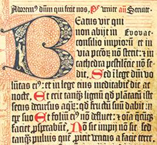

Conditional Statements
What if there were no Decisions to be made?
Our subtitle is a purely rhetorical question, because there are always decisions to be made,
both in real live and of course in programming. Under certain conditions some
decisions are inevitable in normal live, e.g. man and women just have
to go separate ways from time to time, as the image indicates.
Conditionals, - mostly in the form of if statements -
are one of the essential features of a programming language and Python is no exception.
You will find hardly any programming language without an if statement.1
There is hardly a way to program without having branches in the flow of code. At least,
if the code has to solve some useful problem.
A decision has to be taken when the script or program comes to a point where
it has a choice of actions, i.e. different computations, to choose from.
The decision depends in most cases on the value of variables or arithmetic expressions.
These expressions are evaluated to the Boolean values True or False. The statements
for the decision taking are called conditional statements. Alternatively they are also
known as conditional expressions or conditional constructs.
So this chapter deals with conditionals. But to code them in Python, we have to
know how to combine statements into a block. It also seems to be an ideal moment to
introduce the Python block principle in combination with conditional statements.
Blocks and Indentations
 The concept of block building is also known in natural languages, as we can deduce from the following text:If it rains tomorrow, I will tidy up the cellar. After this I will paint the walls. If there is some time left, I will do my tax declaration.As we all know, there will be no time left to deal with the tax declaration. Joking apart, we can see a sequence of actions in the previous text, which have to be performed in a chronological order. If you have a closer look at the text, you will notice that it is ambiguous: Is the action of painting the walls also linked to the event of rain? Especially, doing the tax declaration, does it depend on the rain as well? What will this person do, if it doesn't rain? We extend the text by creating further ambiguities:
If it rains tomorrow, I will tidy up the cellar. After this I will paint the walls. If there is some time left, I will do my tax declaration. Otherwise, I will go swimming. In the evening, I will go to the cinema with my wife!Can his wife hope to be invited to the cinema? Does she have to pray or hope for rain? To disambiguate the text we can phrase it in a way, which is closer to programming code and Python code and hopefully, a happy ending for his wife:
If it rains tomorrow, I will do the following:
- tidy up the cellar
- paint the walls
- If there is some time left, I will
- do my tax declaration
Otherwise, I will do the following:
- go swimming
go to the cinema with my wife in the evening
Such a work flow is often formulated in the programming environment as a so-called flow chart or programming flowchart:

Blocks are used in programming to enable groups of statements to be seen or treated as if they were one statement. A block consists of one or more statements. A program can be seen as a block, which consists of statements and other nested blocks. There have been different approaches in programming languages to syntactically describe blocks: ALGOL 60 and Pascal for example use "begin" and "end", while C and similar languages use curly braces "{" and "}". Bash has yet another design by using do ... done and if ... fi or case ... esac constructs.
There is a big disadvantage for all of these approaches: The code may be all right for the interpreter or the compiler of the language, but it can be written in a way, which is badly structured for humans. We want to illustrate this in the following "pseudo" C-Code snippet:
if (raining_tomorrow) {
tidy_up_the_cellar();
paint_the_walls();
if (time_left)
do_taxes();
} else
enjoy_swimming();
go_cinema();
Let us include some blanks in front of the go_cinema call:
if (raining_tomorrow) {
tidy_up_the_cellar();
paint_the_walls();
if (time_left)
do_taxes();
} else
enjoy_swimming();
go_cinema();
The execution of the program will not change: They will go to the cinema whether it rains or not!
The way the code is written misleadingly connotes the meaning, that they will only go to cinema, if it
does not rain. This example demonstrates the possible ambiguity in interpreting C-Code by humans. This means,
that people write code, which will lead to a program which will not "behave" in the intended way.
There is even another danger lurking in this example. What if the programmer has forgotten to include the last two statements into braces? Should the code be like this:
if (raining_tomorrow) {
tidy_up_the_cellar();
paint_the_walls();
if (time_left)
do_taxes();
} else {
enjoy_swimming();
go_cinema();
}
Now, they will only go to cinema, if it is not a rainy day, which makes sense, if it is an open air cinema.
The following code is the correct code, if they want to go to the cinema regardless of the weather:
if (raining_tomorrow) {
tidy_up_the_cellar();
paint_the_walls();
if (time_left)
do_taxes();
} else {
enjoy_swimming();
}
go_cinema();}
The problem in C is, that the way we indent code has no meaning for the compiler and it might suggest the wrong
interpretation for humans, if they try to understand the code.
This is different in Python. Blocks are created with indentations. We could say "What you see is what you get!"
The example above may look in a Python program like this:
if raining_tomorrow:
tidy_up_the_cellar()
paint_the_walls()
if time_left:
do_taxes()
else:
enjoy_swimming()
go_cinema()
There is no ambiguity in the Python version. The couples visit to the cinema is bound to occur, regardless
of the weather. Moving the go_cinema() call to the same indentation level as the enjoy_swimming(), changes a lot.
In this case there will be no cinema, if it rains.
We have just seen, that it is useful to use indentation in C or C++ programs to increase or ensure the legibility of a program for the programmer but not for the C compiler. The Compiler relies solely on the structuring determined by the braces. Code in Python can only and has to be structured by using the correct indentation. This means, that Python forces the programmer to use the indentation that he or she is supposed to use anyway to write nice code. So, Python does not allow to obfuscate the structure of a program by using bogus or misleading indentations.
A block of code in Python has to be indented by the same amount of blanks or tabs. We will further deepen this in the next subsection on the conditional statements in Python.
Conditional Statements in Python
As we have already stated, the if-statements are used to change the flow of control in a Python program. This makes it possible to decide at run-time whether or not to run one block of code or another.The simplest form of an if statement in Python looks like this:
if condition:
statement
statement
# ... some more indented statements if necessary
The indented block of code is executed only if the condition "condition" is evaluated to True, meaning that it is logically true.
The following program code asks the user about his or her nationality. The indented print statement will only be executed, if the nationality is "French". If the user of this program uses another nationality, nothing will be printed:
person = input("Nationality? ")
if person == "french":
print("Préférez-vous parler français?")
Please note, that if somebody types in "French", nothing will be printed either, because we
solely check the lower case spelling. We can change this by extending the condition with an "or":
person = input("Nationality? ")
if person == "french" or person == "French":
print("Préférez-vous parler français?")
Your Italian colleague may protest, that Italian speakers will not be taken into consideration by
our previous little program. We can change this by adding another if:
person = input("Nationality? ")
if person == "french" or person == "French" :
print("Préférez-vous parler français?")
if person == "italian" or person == "Italian" :
print("Preferisci parlare italiano?")
This small python script has a disadvantage: Let's assume that someone
inputs "french" as a nationality. In this case,
the print below the first "if" will be executed, i.e. the text
"Préférez-vous parler français?" will be printed. After this the program will check, if the
value for person is equal to "italian" and "Italian", which cannot be the case, as we assumed "french"
is the input.
This means that our program performs an unnecessary test, if the input is "french" or "French".
This problem can be solved with an "elif''condition. The expression is only checked after "elif", if the expression in the previous "elif'' or "if" was "false''.
person = input("Nationality? ")
if person == "french" or person == "French" :
print("Préférez-vous parler français?")
elif person == "italian" or person == "Italian":
print("Preferisci parlare italiano?")
else:
print("You are neither Italian nor French,")
print("so we have to speak English with each other.")
Like in our previous example, if statements have in many cases "elif" and "else" branches as well. To be precise: There can be more than one "elif" branch, but only one "else" branch. The else branch has to be at the end of the if statement, i.e. it can't be followed by other elif branches.
The general form of the if statement in Python looks like this:
if condition_1:
statement_block_1
elif condition_2:
statement_block_2
...
elif another_condition:
another_statement_block
else:
else_block
If the condition "condition_1" is True, the statements of the block statement_block_1 will be executed. If not, condition_2 will be evaluated. If condition_2 evaluates to True, statement_block_2 will be executed, if condition_2 is False, the other conditions of the following elif conditions will be checked, and finally if none of them has been evaluated to True, the indented block below the else keyword will be executed.
Example: Dog Years
It's a generally accepted belief, to assume, that one year in the life of a dog corresponds to
seven years in the life of a human being. But apparently there are other more subtle methods to
calculate this haunting problem, haunting at least for some dog owners.
Another subtler - and some think a preciser method - works like this:
- A one year old dog roughly corresponds to a fourteen year old child
- A dog who is two years old corresponds to a 22 year old human
- Every further dog year corresponds to five human years
age = int(input("Age of the dog: "))
print()
if age < 1:
print("This can hardly be true!")
elif age == 1:
print("about 14 human years")
elif age == 2:
print("about 22 human years")
elif age > 2:
human = 22 + (age -2)*5
print("Human years: ", human)
###
input('press Return>')
There is one drawback to the script. I works only for integers, i.e. full years.
True or False
Unfortunately it is not as easy in real life as it is in Python to differentiate between
true and false:
The following objects are evaluated by Python as False:
- numerical zero values (0, 0L, 0.0, 0.0+0.0j),
- the Boolean value False,
- empty strings,
- empty lists and empty tuples,
- empty dictionaries.
- plus the special value None.
All other values are considered to be True.
The ternary if
C programmers usually know the following abbreviated notation for the if construct:
max = (a > b) ? a : b;This is an abbreviation for the following C code:
if (a > b) max=a; else max=b;C programmers have to get used to a different notation in Python:
max = a if (a > b) else bThe Python version is by far more readable. The expression above, can be read as "max shall be a if a is greater than b else b".
But the ternary if statement is more than an abbreviation. It is an expression, which can be used within another expression:
max = (a if (a > b) else b) * 2.45 - 4
Using if statements within programs can easily lead to complex decision trees, i.e. every if statements can be seen like the branches of a tree.
We will read in three float numbers in the following program and will print out the largest value:
x = float(input("1st Number: "))
y = float(input("2nd Number: "))
z = float(input("3rd Number: "))
if x > y and x > z:
maximum = x
elif y > x and y > z:
maximum = y
else:
maximum = z
print("The maximal value is: " + str(maximum))
There are other ways to write the conditions like the following one:
x = float(input("1st Number: "))
y = float(input("2nd Number: "))
z = float(input("3rd Number: "))
if x > y:
if x > z:
maximum = x
else:
maximum = z
else:
if y > z:
maximum = y
else:
maximum = z
print("The maximal value is: " + str(maximum))
Another way - which is less efficient, because we have to create a tuple or list to compare the numbers - to do it, can be seen
in the following example. We are using the built-in function max, which calculates the maximum of a list or a tuple:
x = float(input("1st Number: "))
y = float(input("2nd Number: "))
z = float(input("3rd Number: "))
maximum = max((x,y,z))
print("The maximal value is: " + str(maximum))
If we want to read in an arbitrary number of elements, which we do not want or need to save in a list, we can calculate the maximum in the following way:
number_of_values = int(input("How many values? "))
maximum = float(input("Value: "))
for i in range(number_of_values - 1):
value = float(input("Value: "))
if value > maximum:
maximum = value
print("The maximal value is: " + str(maximum))